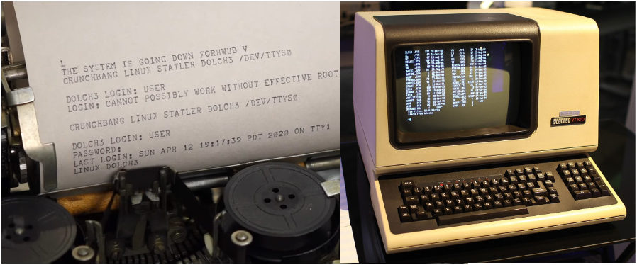

Shell is a powerful Command Line Interface (CLI) in Linux. We type commands, and shell executes them in a beautiful and sophisticated way. Shell is also a super flexible programing language for Linux. It could bind commands together with conditions, loops and various expansions ($,~). Shell is actually a raw interpreting programming language. Raw interpreting means there is no compiled middle bytecode. In this post, I use bash, which is the most popular and widely deployed shell implementation.
$ echo $SHELL # check current shell
/bin/bash
$ echo $BASH_VERSION
5.1.16(1)-release
Terminal, SSH, PTY, LDISC
We say Terminal Emulator, such as Tabby, MobaXterm and etc, which emulates the old hardware terminal, such as VT100. SSH (Secure SHell) is the secure tunnel between terminal emulator and host.
The terminal is an application that provides a window for us to type into. It doesn’t actually know what ls or cd means; it just passes those characters to machines and waits for responses and draw the window on screen. When you connect a server remotely, the sshd daemon in the server accepts this connection. Once the connection is established, the shell program (bash, but could be others by configuration) is executed.
Anything you type in terminal is transferred to remote linux server immediately. SSH connection receives those bytes stream and give them to kernel. In kernel, Line Discipline buffer those bytes until an Enter is pressed (canonical mode). Then Line Discipline give the whole user input to the corresponding PTS device where the shell or user process is blocked by reading. Line Discipline also echo bytes back to terminal so that we could see what we just typed. Shell doesn’t know who is talking to him. It could be remote SSH connections (most common), GUI terminals (Linux desktop) or native TTY.
TTY and PTY
Originally, computers utilized old Teletype Writer to sent and receive text. Telegraph was invented earlier than computer. In modern Linux, when you press Ctrl+Alt+F3, you leave your graphical desktop and enter a full-screen, text-only mode. That is called native TTY (or virtual console), in which the keyboard and screen are hard-wired to be the input and output devices. However, native TTY is not the same as old hardware terminals.
Carrage Return (CR,
\r) and Line Feed (LF,\n) are both from old teletype machine.
PTY (Pseudo-Teletype) is just faked physical TTY. A PTY is a pair of virtual devices in kernel. It consists of two parts:
- PTY Master: handled via a file descriptor opened through
/dev/ptmx(multiplexer) - PTY Slave (PTS): the fake hardware, provide a standard TTY interface for processes, located at at
/dev/pts/<N>

Teletype Writer and VT100
Line Discipline (LDISC)
The Line Discipline (LDISC) is the middle manager of the PTY/TTY subsystem. Its job is to take raw, messy character inputs from a driver and turn it into something a high-level application (like a shell) can actually use. In Linux, the default line discipline is N_TTY, which is attached to PTS side of PTY pair. There are two modes (icanon flag) in LDISC:
- (1) Canonical Mode (Cooked Mode): Default mode, the LDISC buffers input until you hit Enter. It also handles the logic for the Backspace and Delete keys, and a few hot keys.
- (2) Non-canonical Mode (Raw Mode): Pass every character, including mouse operations, immediately to the applications run by shell. Used by interactive applications like vim, nano, tmux, top and etc. Noticably, shell also run in non-canonical mode.
Other functions of LDISC:
- Character Echoing: When you type a character, it technically goes into the kernel. The LDISC is responsible for sending that character back to your terminal screen immediately. Echoing could be closed while typing password. (In old-good-days, when TTY didn’t have a screen, letters echoed back were shown on a paper.)
- Signal Generation: The LDISC monitors the input stream for special characters and converts them into kernel signals, such as
^Cconverts to SIGINT,^Zconverts to SIGSTP. - Input/Output Transformation: CR/LF transformation, Tab expansion. (E.g., when you press Enter, the keyboard sends a
\r, but the LDISC is configured to map that to a\nso the shell understands it as a newline.) - Flow Control:
^Spauses output,^Qresumes output (try this when you screen freezes)
^Crepresents Ctrl+C, both capital C and lower c!
M-brepresents Alt+B, both capital B and lower b! (M:Meta)
Raw Mode isn’t a Single Toggle
It’s a collection of flags. That’s why when you are using vim, you can still freeze the screen by ^S.
Technically, non-canonical mode is a single toggle.
Flow Control: ixon flag
- ixon: enables XON/XOFF flow control
^S(XOFF): stop process output, including echoing^Q(XON): resume
# check ixon flag, no - prefix means on!
$ stty -a | grep ixon
# close LDISC echoing
$ stty -echo
LDISC and kernel have buffers for both directions. When XOFF, input and output are all buffered. When changed to XON, all buffers are cleared. So, you might have an illusion that you can still issue commands blindly (??). Buffer is limited, if XOFF too long, the kernel puts that process to sleep, and the process stays in Interruptible Sleep (S) until the buffer clears.
The Whole Picture
[ kernel ]
Remote: Terminal – ssh – network – sshd – [PTY Master – LDISC – PTS] – Shell
Local GUI: Terminal – [PTY Master – LDISC – PTS] – Shell
Virtual TTY: Keyboard/Monitor – [Keyboard/Monitor Driver – LDISC – TTY] – Shell
Web: Browser (xterm.js) – Network (Websocket) – Web Server – [PTY Master – LDISC – PTS] – Shell
PTY Master communicates with different processes. PTY Slave is paired with shell process.
GPU Terminal Emulator
Many modern terminal emulators employ GPU to accelerate terminal window rendering. It just make the screen rendering super fast and free a few CPU cycles. Most likely, GPU acceleration in these modern terminals is an option, and the default is on.
Sometimes, I like the laggy feeling while working on terminal because I am a stupid, slow and overthinking human.
Another feature for modern terminal is to support emoji! 🚀🎉
How does Shell Run in Non-canonical Mode?
When you run stty command, you can see there is no - before icanon flag. But this doen’t mean shell is running in cannonical mode. Shell is actually run in non-canonical mode so that we could have a few fancy hot keys while working on command line, such as ^A. These hot keys are provided by readline library, not LDISC (or overrided). To support these hot keys, shell has to be run in non-canonical mode. When shell is waiting child process, like stty command, it switches back to the default canonical mode. When child process check tty status, they get canonical mode as the result. To verify this, run cat command, then type some words and try ^A, which is not a hot key in LDISC.
Hot Keys from LDISC
^S |
stop output to screen |
^Q |
resume output |
^C |
send SIGINT |
^D |
If the command line is empty (no spaces), EOF, shell exists. If not empty, LDISC flushes current buffered text to the shell immediately, doesn’t wait Enter. (test with cat) |
^Z |
send SIGTSTP |
^\ |
send SIGQUIT |
Hot Keys from Readline
Readline style is from Emacs!
^A |
move cursor to the beginning |
^E |
move cursor to the end |
^F |
move cursor one character forward |
^B |
move cursor one character backward |
M-f |
move cursor one word forward |
M-b |
move cursor one word backward |
^K |
delete all after cursor, include cursor position |
^U |
delete all before cursor, not include cursor position |
^D |
Delete the character under the cursor. If the cursor is at right-most, do nothing. If command line is empty prompt (no spaces), EOF, shell exists. |
^L |
move the cursor to the home postion, top left, and fill the rest of view with blank lines, it doesn’t really clear the terminal window, it just scrolling. Can be used while typing command. |
^W |
delete the word before the cursor, simple and aggressive, it deletes everything back to the next whitespace |
M-Del |
delete the word before the cursor, surgical deletion, it deletes back to the next non-alphanumeric character |
M-d |
delete the word after the cursor |
^Y |
paste (Yank) the last deleted text, not ^D |
^P |
previous command |
^N |
next command |
^R |
reverse-i-search (Incremental) |
Shell Variants
- Bourne Shell (sh)
- Bourne Again Shell (bash)
- Debian Almquist Shell (dash or ash)
- C Shell (csh, Bill Joy, author of vi)
- TENEX C Shell (tcsh)
- Korn Shell (ksh)
- Z Shell (Zsh, MacOS since 2019)
- Friendly Interactive Shell（fish）
- Restricted Bash Shell (rbash)
About Dash
Due to copyright issues surrounding the Bourne Shell as it was used in historic Unix releases, Kenneth Almquist developed a clone of the Bourne Shell, known by some as the Almquist Shell and available under the BSD license, which is still in use today on some BSD descendants and in low-memory situations. The Almquist Shell was ported to Linux, and the port renamed the Debian Almquist Shell, or dash. This shell provides faster execution of POSIX standard shell scripts with a smaller memory footprint than its counterpart Bash. Its use tends to expose bashisms issue, bash-centric assumptions made in scripts meant to run on dash (in Ubuntu, /bin/sh –> dash).
$ ll /usr/bin/sh # bashim in Ubuntu
lrwxrwxrwx 1 root root 4 Apr 19 2023 /usr/bin/sh -> dash*
Everything Is A File
The phrase “Everything Is A File” is one of the defining philosophies of Unix-like systems like Linux. While it’s not literally true that a hard disk drive and a text document are the same thing, Linux treats them the same way so that you can interact with them using a unified set of tools. When you talk to a printer, a driver, the input/output of another process and etc, the system uses a File Descriptor for almost everything. The genius of this design is to wrap all kinds of resources with the same I/O APIs and doesn’t care what these resources really do. If everything looks like a file (e.g. a stream of bytes), then we could use one set of APIs to do all IO tasks.
File is an unified abstraction layer for IO!
File Descriptor (FD)
A file descriptor is simply a Non-Negative Integer that acts as an index or a handle to an open resource (file). There are three reserved file descriptors which are automatically opened for every process running in Linux.
- stdin, FD is
0, standard input from keyboard by default - stdout, FD is
1, standard output to screen by default - stderr, FD is
2, standard error output to screen by default (no buffer)
Shell’s three standard FDs:
$ ls -l /dev/std*
lrwxrwxrwx 1 root root 15 Mar 7 16:40 /dev/stderr -> /proc/self/fd/2
lrwxrwxrwx 1 root root 15 Mar 7 16:40 /dev/stdin -> /proc/self/fd/0
lrwxrwxrwx 1 root root 15 Mar 7 16:40 /dev/stdout -> /proc/self/fd/1
So, any file opened in your program start from file descriptor 3. Any process needs input and output, otherwise why and how run them! So, we have 3 default file descriptors for any process in linux.
Interestingly, all three standard FDs of shell point to the same PTS pseudo-devices.
$ ll /proc/self/fd/{0,1,2}
lrwx------ 1 xinlin xinlin 64 Apr 3 16:53 /proc/self/fd/0 -> /dev/pts/2
lrwx------ 1 xinlin xinlin 64 Apr 3 16:53 /proc/self/fd/1 -> /dev/pts/2
lrwx------ 1 xinlin xinlin 64 Apr 3 16:53 /proc/self/fd/2 -> /dev/pts/2
Controlling Terminal
The /dev/tty represents controlling terminal. It is a special device file that represents the actual terminal currently associated with a process. You can redirect stdin or stdout, but not for controlling terminal. It always points to the physical or virtual terminal.
Normally, controlling terminal is used to prompt user input password or something else no matter where stdout is redirected to. In this case, controlling terminal could still be able to interact with users. And it is more safe. It could forces user to input by typing keyboard when process read it since stdin could also be redirected to somewhere.
In Linux, Data is Consumed! Once a program reads a character from buffer, that character is gone, and it cannot be read again by another process. By default, stdin and
/dev/ttyare both point to the same PTS file.
Virtual File System
File Names
- File names that begin with a period character are Hidden. However, you can always see them by
ls -a. The extreme case is.itself which points to current directory...is also hidden which points to parent folder. - File names in Linux are Case Sensitive.
- Linux has no concept of File Extension like Windows system. However, while Linux itself does not care about file extensions, many applications do, or they are just for readability.
- Though Linux supports long file names which may contain embedded spaces and punctuation characters, we should limit the punctuation characters to period, dash, and underscore (
.-_). Most importantly, Do Not Embed Spaces In File Names. You will thank yourself later. - File is a high-level concept. Folder or Directory is also a File! Everything is a file!
Check File Types
There is a commmand called just file which could be used to check the file types. ASCII, ELF, JPEG, PNG, Shell Script, Directory, various devices and etc. Since linux doesn’t care file extensions, it’s not safe to tell file type by suffix.
File System Organization
All files on a Linux system are arranged in one single hierarchical directory structure, which is a tree-like structure. Unlike Windows, Linux doesn’t have the driver letter concept, which is used to split the file system into a series of different trees (one for each driver letter). There is only one single tree in Linux file system starts from root /. Technically, it is a Directed Acyclic Graph (DAG). Pathname starts with / is absolute.
Tilde Expansion
~[username]: shortcut of users’ home directory, if username doesn’t exist, expand literally~+: current directory,$PWD~-: previous directory,$OLDPWD
$ echo ~
/home/xinlin
$ echo ~root
/root
Hidden Directory
.[/]: current directory..[/]: parent directory
In general, you don’t need to specify
./to represent current working directory.
$ cd ././././ # stay in current directory
$ cd ./////./ # nothing changed
Why Virtual?
There are lots of files sit somewhere in the file system but don’t exist on disk. They are virtual, and linux uses the same way to manage them. They could be hardware, processes, part of RAM or kernel itself.
/proc: process information/sys: kernel/dev: hardware/tmp,/run: temporary storage in RAM
There is a layer in kernel called VFS which is in the middle of your commands and all kinds of files!
Links
There are two types of links in Linux file system: Hard Link and Symbolic (Soft) Link.
Symbolic (Soft) Link is the most common link type in Linux. It acts like a shortcut. It is an independent file that points to somewhere else. If you delete the original file, the link becomes dangling (invalid). Symbolic links can cross different file systems, and can point to directories (and act like real directories). Kernel and programs can tell symbolic link by the first bit of file mode l so that they could have a logic to prevent infinite loops. Symbolic links give files another name but don’t increase the link count. Follow symbolic link is the default behavior in linux.
Hard Link is actually another name for the same data on the disk. It points to the same inode (the physical data) rather than the file. It looks like exactly a real file. If you delete the original filename, the data still exists as long as at least one hard link remains. Hard links cannot point to directories and cannot cross file systems (same inode). Kernel and programs see hard link a real data file. Technically, you can creat a hard link to a symbolic link. Create a hard link will increase the Link Count for that target file.
# link count is 2!
$ ls -l filename # long format
-rw-r--r-- 2 user group 1024 Mar 28 10:00 my_file.txt
Every empty directory has a link count of 2. One is from its parent, another is the hidden directory . point to itself. Whenever a sub-directory is created, in the sub-directory there is a directory .. point to its parent and increase its link count.
$ ls -l
...
drwxr-xr-x 15 xinlin xinlin 4096 Sep 12 2025 pisitepackages
drwxr-xr-x 2 xinlin xinlin 4096 Jun 18 2025 srcs
Sometimes, you might find the link count of directories are always 1, such as those in /mnt/c/… in WSL.
File Mode Bits (File Types and Permissions)
On a Linux system, each file and directory is assigned access rights for the owner of the file, the members of a group of related users, and everybody else. Linux is a multi-user system.
r: Read. Allows the contents of a directory to be listed if x is enabled.w: Write. Allows files within the directory to be created, deleted or renamed if x is enabled.x: eXecute. Allows a directory to be entered.
$ ls -l /bin/bash
-rwxr-xr-x 1 root root 1113504 Jun 6 2019 /bin/bash
1|2|3 |4 | 5 6 7 8 9 10
1: file type, 1 bit
2: access rights for owner, 3 bits
3: access rights for group, 3 bits
4: access rights for others, 3 bits
5: link count
6: file owner
7: file group # file owner might not be in file group
8: file size
9: last modified time
10: file pathname
File types:
-, regular filed, directoryl, symbolic linkc, character deviceb, block device
Understanding Command
Command is a high-level and general term. It could be a runnable binary program or executable script, or a shell builtin, function or alias. You type commands and their arguments, and then shell find it and run it.
Everything you type in command line is a string! It depends on command to interpret them accordingly.
Spaces in Command Line
- Shell uses spaces to separate commands and their arguments. Multiple continuous spaces are treated as one.
- Assignment command cannot have space around the equality symbol (=).
- If one argument has spaces within, you need quote it to keep those spaces. (e.g. defining alias)
- When using
$to expand variable, you need double quotes"$variable"to keep those spaces. - When using
\to break line, no space after after\.
How does Shell Find Commands?
The command search order in bash:
- alias
- reserved keywords
- functions
- builtins
- external commands
Shell Builtin Command
External commands run in child processes! Builtins run in the current shell process for speed. They are actually part of shell. Sometimes, you might have a shell alias or function which has the same name as a shell builtin and you want to run the builtin version, not the alias or function, you could utilize another builtin command called builtin.
# use builtin to run another builtin
# no command search anymore!
builtin hash -p /usr/bin/who who
If you want to ignore alias and functions, force shell to search builtin and externals, you can leverage command builtin and one of the bashslash \ tricks.
# run command by skipping alias and function search
command ls
# run command by only skipping alias search,
# alias names match would fail.
\ls
'ls'
"ls"
[ is a builtin as well. It is a synonym for test builtin.
# [ is builtin commmand, so, a space after it.
# the rest $x, -eq, 5 ] are all ['s arguments.
# [ $x -eq 5 ]; is a command followed by ;
if [ $x -eq 5 ]; then ...
enable builtin could also be used to control enabling some specific builtins.
enable -n echo # disable builtin echo
Hash Table for Commands
Command hash table is another speed up trick in shell since disk searching is expensive. When you first issue an external command, shell stores command and its location in its internal hash table, and the subsequent calls would directly locate the command by searching the hash table.
hash # show hash table and command hit count (hits)
hash -r # clear hash table, force shell to search again
hash -d <cmd> # remove one command entry
Builtin vs. Binary
There are some commands which have multiple versions, such as pwd. Pwd is a shell builtin as well as a binary. Why?
- Builtin pwd is lazy and efficient. It doesn’t always check disk for speed reason (no child process) since shell’s
$PWDenv variable is well maintained bycdcommand. Speed is the most important reason for the existence of builtins. - Binary pwd is the Safe Fallback. It always check disk. E.g. in python, if you want to run something by subprocess module with
shell=False, there must be a binary! - No all processes are executed by shell!
Backslash \ in Command Line
- skip alias,
$ \ls - break lines so that we can write a long command line into multi-lines,
$ [ ... ]\, No Space After this backslash! Since spaces are used to separae components in a commnd line,\is an escaped literal space. We can also utilize this trick to write command line in a new line (no command before\). (|pipe can also be used to start a new line and it is more safe) - escape some special characters, such as
\$,\n,\t,\a(beep),\"
Exit Code [0-255]
Shell use the exit code of command to know if the command succeeds or fails. The exit code is stored in a special variable $?. However, in linux, 0 means success, and non-zero means various errors.
# true and false are two builtins,
# used to generate exit codes accordingly.
$ true; echo $?
0
$ false; echo $?
1
When there are more than one command in one comand line statement, the exit code is determined by the last executed command! E.g. when connecting command with ;, && or ||.
Alias Expansion
Shell executes alias by expanding its defining string. Expansion –> Execution, like other expansions provided by shell, such as glob. However, by default, shell doesn’t expands alias in non-interactive scripts. But we can enable this function manually.
shopt -s expand_aliases
Semicolon ; in Command Line
The purpose of semicolon in command line is simply to separate multiple commands so that we could write them down in one line and run them one by one from left to right. It also represents the end of one command in script. Shell executes these commands one by one from left to right, and doesn’t care the exit codes of these commands. Sometime, it’s easier to issue multiple commands together in one line by semicolon instead of creating a script to run them all.
One interesting case including both alias expansion and semicolon:
$ alias gg='echo gg'; gg
gg: command not found
$ gg
gg
One critical detail about shell’s mechanism is that shell read command line all in once, parses them and then executes. While parsing, shell doesn’t think gg is an alias. So, it keeps it as original literal gg. That’s why gg is not found while executing.
Subshell and Command Expansion
Commands in parentheses () are grouped and run in a separated sub-shell. It is used for isolation or directing multiple outputs as one. Together with $ symbol, we could retrieve the output of a command in sub-shell as a command line expansion. Old style is two back-ticks `` and it also run commands in sub-shell.
# run command in sub-shell process by ().
$ echo $(ls)
$ echo "$(ls)"
$ echo `ls` # two back-ticks, old syntax, no $ symbol
$ file $(ls /usr/bin/* | grep zip)
$ (
cmd1
cmd2
#...
) > output.txt
Group Commands
By braces {}, commands are grouped and run in current shell, not sub-shell. It is great for sending the output of multiple commands into a single file without opening and closing the file repeatedly.
# one space after {,
# one semicolon must follow the last command.
# $ { cmd;}
$ { echo 1; echo 2; }
$ {
echo "Log Start: $(date)"
echo "User: $USER"
df -h
} > system_report.txt
Chain of Commands: And && and Or ||
Like condition checking in C, shell leverages the exit codes of commands to conditionally run other commands.
# success chain,
# only when make succeeds, run make install
$ make && sudo make install
# fallback
# only when cmd1 fails, run cmd2
$ cmd1 || cmd2
# run cmd1 first,
# only when cmd1 succeeds, run cmd2,
# only when at least one of cmd1 and cmd2 fails, run cmd3
$ cmd1 && cmd2 || cmd3
# run cmd1 first,
# only when cmd1 fails, run cmd2,
# only when at least one of cmd1 and cmd2 succeeds, run cmd3
$ cmd1 || cmd2 && cmd3
One critical detail is that the exit code is determined by the last executed command! So, sometimes you would see this in script:
set -e
command || true # if command fails, make sure this line always exit with 0
Be careful:
# linear chain
# if cmd1 fails, skip cmd2 and cmd3
cmd1 && cmd2 && cmd3 || true
# run cmd1,cmd2 and cmd3 as a group in a Subshell
( cmd1 && cmd2 && cmd3 ) || true
Colon : in Command Line
Colon : is a syntax placeholder and builtin, like pass and ... in Python. It does nothing, and always return success (0). When defining a shell function, : could be used to make sure syntax right if you don’t know how to write it at that moment.
Run Command by & and nohup
Appending an ampersand & to the end of a command is the standard way to start a process in the background. This allows you to keep using your terminal while the command runs.
$ cp -r /large/folder /backup/folder &
[1] 12345 # Job ID and PID
Even though the command is running in background, it could still output to stdout. You might need to redirect its output. And background processes would still be killed by SIGHUG (Hangup) when you close terminal. To avoid being killed by SIGHUG while closing terminal or other events, we could execute commands with nohup. nohup is a convenient way to run a persistent process.
# run a persistent command in background,
# log all its output to a disk file,
# you can close your terminal now,
# this process would become an orphan and be adopted by PID 1 process.
$ nohup path/to/command > path/to/log.txt 2>1& &
# the same by &>
$ nohup path/to/command &> path/to/log.txt &
History Command Expansion: !
# !!: last command
# quickly repeat last command with sudo:
$ sudo !!
$ !<n> # run n-th command in history list
Variable
Shell variables are essentially name-value pairs that store information. They act like little containers that hold data (string), such as text, numbers, or file paths, which the shell and other programs can access to control behavior. No programming languages can work without variables! However, the mental picture of shell is a little different about variables. They are not passed. They are Expanded by using $ dollar symbol. {} could be also used to define boundary, solve ambiguity and for other functions. Variable expansion works in double quotes, but not in single quotes (suppress all expansions). One important use case of double quotes is to keep variables in one piece if they contain spaces!
In shell, variables don’t need to be declared first. But if there is a typo, it becomes an Undefined Variable and you get Empty String by $ without error. This rule is also applied to parameters.
$ var=123456 # define a variable for current shell session
$ read -p 'what:' what # receive what from user input
# someone call it Parameter Expansion as well,
# $Shell is undefined and expanded to an empty string
$ echo $SHELL ${SHELL} "$SHELL" "${SHELL}" '$SHELL' '${SHELL}' $Shell
/bin/bash /bin/bash /bin/bash /bin/bash $SHELL ${SHELL}
# "": weak quoting, allows variable expansion and escape characters.
# '': strong quoting, treats everything literally.
# delete a variable
$ unset var
Special Variables
$? # exit code of last command
$$ # PID of current shell
$PPID # parent PID
$! # last background PID, work with wait
$- # shell parameters
$_ # last argument of last command
# when running scripts
$0 # script pathname
# shell function doesn't have its own $0
$1 # first argument
$2 # second argument
#...
$# # number of arguments
$* and $@
Both represent all command line arguments. Behave differently when double quoted.
$*: all arguments (split by spaces)$@: all arguments (split by spaces)"$*": all in one string"$@": original argument list (you should use this to ensure your script doesn’t break when users input filenames or strings containing spaces)
Read-only Variables
# define read-only variables
$ readonly abc=123
# or
$ abc=456
$ readonly abc
# show all readonly variables
$ readonly -p
# readonly variables couldn't be unset!
Set Positional Arguments
# start with set --, argument could be any string
$ set -- a b -c
$ echo $# $0 $1 $2 $3
3 -bash a b -c
# $0 is '-bash': login shell, pre-load all profiles
# $0 is 'bash': non-login shell, when you run bash in a login shell, only load `~/.bashrc`
Local Variables in Shell Function
When you define a variable inside a shell function, it is global in current shell session by default. This is a common pitfall that can lead to variable pollution, where a function accidentally overwrites a variable used elsewhere in your script. To prevent this, you use the local keyword before variable declaration, or local -r to make it local and readonly. When a local variable has the same name as a global variable, it shadows the global one.
Environment Variable
Like any other running processes in Linux, shell also has environment variables and they are more noticable. They are actually very important for executing commands correctly.
The environment variables are always set up by kernel, which are physically located at the top of the Stack in virtual memory of processes together with other parameters. The start address in virtual memory could be known by the third argument of main entry (in C). Normally, we use all capital letter constant-like names to represent them. But they are called variable, and they could be effectively modified during the running of process. Shell keeps a copy of them in Heap so that we could change, add or delete them. Kernel uses the information passed to execve system call to set up env variables for any process.
# print out all env variables in ascending order
printenv | sort
# print PATH
printenv PATH # echo $PATH
The Passing of Exported Env Variables to Child Processes
Passing all exported env variables to child processes is the policy of shell (written by this way). But in kernel, env variables for each process are solely determined by the *envp argument of execve system call. Many high-level programming language like Python, Nodejs and Go pass env variables to child process as the default behavior. But you could change or control this behavior by different arguments.
For shell, only exported variables are called env variables, and only them are inheritable by child processes. We have shell Local Variables as well, and they are for shell process only.
$ IAMA_VAR=19791104 # define a shell local variable
$ export SECURITY_CODE=20110407 # define an env variable
$ export IAMA_VAR # export a local variable
This passing behavior of env variables is like function argument passing in C. Child process could never affect the values of env variables in parent process.
$ command # inherit all env variables
$ ALG=5 command # inherit all env variables
# and set temporary ALG=5 for command
# when command exits, ALG=5 is gone
# parent shell never see ALG
$ export ALG=7 # make ALG=7 into env variables
# current shell also see ALG=7
$ command # inherit all env variables in which ALG=7
$ unset ALG # delete env variable ALG
$ env ALG=5 command # same effect as $ ALG=5 command
# but command is run in env process
$ env -[i] ALG=5 command # command only has ALG=5, no other env variables
# assume command contains the right path
$ command ALG=6 # ALG=6 is the first command line argument
The values of env variables are changable as well. Env variables are often in uppercase. Shell local variables are often in lowercase.
Env Variables vs. Command Line Arguments
- Env variables could be shared by many different child processes. Command line arguments are only for a specific running of programs. So, the values of env variables are more stable, and command line arguments are more likely to changed for different running.
- Env variables are passed by default and implicitly. Command line arguments are passed explicitly.
- Env variables cannot be seen by
pscommand. They are more secure! That’s why API keys are always stored in env variables.
Well-known Env Variables
PATH: It is a colon-separated list of directories. In order to run external commands, bash searches these directories from left to right except when you type the commands with path (/exists).
Array
Define array:
# define an array and access
$ aa=(a b c)
$ echo $aa[0] $aa[1] $aa[2] # wrong
a[0] a[1] a[2]
$ echo ${aa[0]} ${aa[1]} ${aa[2]} # right, must be curly braced
a b c
# another way to define an array
$ bb[0]=0
$ bb[1]=1
$ bb[2]=2
$ echo ${bb[0]} ${bb[1]} ${bb[2]}
0 1 2
# could skip indexes, undefined element --> empty string as well
$ cc[1]=c1
$ cc[3]=c3
$ echo ${cc[0]} ${cc[1]} ${cc[2]} ${cc[3]}
c1 c3
# the same as accessing aa[0]
$ echo ${aa}
a
# define array by specifying indexes
$ dd=([2]=3 [0]=0)
$ echo ${dd[0]} ${dd[2]}
0 3
$ ee=(1 [5]=5 6)
$ echo ${ee[0]} ${ee[5]} ${ee[6]}
1 5 6
# get valid indexes
$ ee=(1 [5]=5 6)
$ echo ${!ee[@]}
0 5 6
$ echo ${!ee[*]}
0 5 6
Iterate array:
$ echo ${aa[@]}
a b c
$ echo ${aa[*]}
a b c
$ for i in ${aa[@]}; do echo $i; done
a
b
c
$ for i in ${aa[*]}; do echo $i; done
a
b
c
# like $@
$ for i in "${aa[@]}"; do echo $i; done
a
b
c
# like $*
$ for i in "${aa[*]}"; do echo $i; done
a b c
$ gg=(aa "bb cc dd" ee)
$ for i in ${gg[@]}; do echo $i; done
aa
bb
cc
dd
ee
# like $@
$ for i in "${gg[@]}"; do echo $i; done
aa
bb cc dd
ee
$ for i in ${gg[*]}; do echo $i; done
aa
bb
cc
dd
ee
# like $*
$ for i in "${gg[*]}"; do echo $i; done
aa bb cc dd ee
Get the lenght of array:
# like $#
$ echo ${#aa[@]}
3
$ echo ${#aa[*]}
3
Append and delete elements of array:
$ echo ${aa[@]}
a b c
$ aa+=(d e f)
$ echo ${aa[@]}
a b c d e f
$ unset aa[1] aa[4]
$ echo ${aa[@]}
a c d f
$ echo ${!aa[@]}
0 2 3 5
Two special array, BASH_SOURCE and FUNCNAME.
Mapping
$ declare -A jj
$ jj['aa']=11
$ jj['bb']=22
$ jj['cc']=33
$ echo ${jj[@]}
22 11 33
$ echo ${!jj[@]}
bb aa cc
$ for i in ${jj[@]}; do echo $i; done
22
11
33
Export Shell Function
Glob (Wildcard)
Long long ago, in Unix V6, there was a program called /etc/glob. It was used to expand Wildcard Pattern. Shortly after, this program was merged into shell. Now, shell expands wildcard pattern in command line, and then executes command with the expansion! The order is critical, Expansion –> Execution. The glob wildcard pattern expansion is a function provided by shell. The result of expansion is a list of existed file pathnames separated by a space which is passed to command. So, it is also called Pathname Expansion.
Wildcard rules are earlier than regular expression. There is no repeat concept in glob.
Wildcard Pattern Crashing Course
?, any single character (1 length)*, any string, including empty string (any length)[...], character set[!...], negated character set,[^...]stype is also supported/character cannot be matched, multiple glob expression can be connected by/- trailing slash
/indicates only folders (leading/means absolute pathname) - quotation disables glob expression and makes it literal
- special characters in
[]become normal
$ ls .b* # any hidden pathnames started with b
.bash_history .bash_logout .bashrc
$ ls d*/d*
demo/dcp_block.py
$ echo d*/ # show all folders starts with d
demo/
Character Set Crashing Course
Character set, or classes, is kind of standard thing defined by POSIX. They are used in many different commands, such as grep, sed or awk.
- enumeration:
[1a2b3c] - range:
[0-9],[a-zA-Z] - POSIX standard:
| Class | Description | Equivalent (ASCII) |
|---|---|---|
[:alnum:] |
Alphanumeric characters | [A-Za-z0-9] |
[:alpha:] |
Alphabetic characters | [A-Za-z] |
[:digit:] |
Numeric digits | [0-9] |
[:lower:] |
Lowercase letters | [a-z] |
[:upper:] |
Uppercase letters | [A-Z] |
[:cntrl:] |
Control characters | Non-printable chars |
[:graph:] |
Visible characters | [^ [:cntrl:]] |
[:print:] |
Visible characters and space | [ [:graph:]] |
[:blank:] |
2 Blank characters | [ \t] |
[:space:] |
6 Whitespace characters | [ \t\n\r\f\v] |
[:punct:] |
Punctuation characters | ['-!"#$%&'(~)*+,./:;<=>?@[\]^_{}] + backtick |
[:xdigit:] |
Hexadecimal digits | [0-9A-Fa-f] |
nullglob
When the glob expansion returns nothing (null), the default bahavior from POSIX standard is to treat the glob expression itself as a literal and pass this literal to command. This behavior could be changed by shopt. When nullglob is on, those glob expressions which couldn’t find anything return empty string.
# set nullglob on, return empty string to command line when nothing found
$ shopt -s nullglob
globstar
The double star ** is known as the globstar or recursive wildcard. While a single star * matches files and directories within a single level, the double star is designed to dive deep into an entire directory tree.
# set globstar on
$ shopt -s globstar
extglob
Shebang #!
Comments start with
#, like Python, simple.
Shebang starts with #! (Hash and Bang) and it has to be the first line of any executable scripts. It specifies which program should be called to execute this script!
Interestingly, this first two characters #! is for kernel, not shell. When shell finishes its job and pass this command to kernel, shell invokes fork and exec system calls. Kernel checks the execution x permission of the file, and then the first few magic numbers of it and decides how to run it. When kernel sees the magic number starts with shebang 0x23 0x21, it knows that this is not a binary executable, it is a text file who needs an interpreter. The interpreter is specified just after shebang. Once kernel finds the interpreter, checks interpreter’s execution x permission, and then it loads and run the interpreter with this script file as one argument.
Bash has a fallback. If kernel cannot find the specified interpreter, bash would try to use its
$SHELLto run it.
Another interesting thing on shebang line is that we can only specify One Argument for the interpreter. This is because kernel parsers the shebang line and takes everything after the first space as a single argument.
#!/usr/bin/python -u
#!/usr/bin/env python
workaround: -S option in env
#!/usr/bin/env -S bash -x -v
Pipeline
IO Redirection
Redirect to Files
If file doesn’t exist, shell creates it.
# redirect stdout to file
$ cmd > file
# redirect file to the stdin of cmd
$ cmd < file
# redirect stderr (2) to file
$ cmd 2>file
# redirect stdout to file,
# redirect stderr to stdout (&1),
# redirect stdout and stderr to file
$ cmd > file 2>&1
$ cmd &> file
# redirect ifile to the stdin of cmd,
# redirect ofile to the stdout of cmd
$ cmd < ifile > ofile
# redirect stderr to /dev/null
$ cmd 2>/dev/null
# redirect stdout and append (>>) to file
$ cmd >> file
# redirect stdout and append to file,
# redirect stderr to stdout (&1),
# redirect stdout and stderr to file by appending
$ cmd >> file 2>&1
$ cmd &>> file
Tricks to empty file by redirection. Be careful! Append is more safe!
# empty file
# redirect any command with empty output to file
$ > file
$ : > file
$ cat /dev/null > file
$ echo -n > file
# nothing changed
$ >> file
Redirect to Process
# redirect stdout of cmd1 to stdin of cmd2
$ cmd1 | cmd2
# redirect pipeline
$ cmd1 | cmd2 | cmd3 | ...
# redirect stdout and stderr to stdin of cmd2
$ cmd1 2>&1 | cmd2
# |& is a shortcut for 2>&1 |
$ cmd1 |& cmd2
Here Document and String
We can redirect a file to the stdin of process by <. What if we just type something in multiple lines and redirect them to the stdin of process? This is the case called here document, and we use <<.
# __eof serves as the end string,
# it could be any string you defined.
$ cat << __eof
> Hello here document.
> What you type here is redirected to the cmd before <<
> __eof
Hello here document.
What you type here is redirected to the cmd before <<
One of the use case of here document is to write multi-line comments in script.
: << README
...
...
README
There are many ways to redirect a single string to the stdin of process. One of them is called here string by <<<.
# echo '...' | cat
$ cat <<< 'hello here string'
Pseudo-Devices
/dev/null, the famous black hole in linux. It discards all data written to it and returns an End-of-File (EOF) to any process trying to read from it./dev/zero, the infinite zero (0x00). It returns infinite zero to any process reading it./dev/full, the full plate. It returns no space left to any process trying to read it. It is mainly used for test./dev/tty, controlling terminal. It is mainly used to prompt user input password even when the stdout is redirected to a log file./dev/random/dev/urandom
Job Control
Braces Expansion
Square bracks [] represent a character set which matches only one character in glob or regular expression. Braces {} consist a set of string which are iterated. It could be a comma-separated list, or a range.
$ echo tt.{sh,py,c}
tt.sh tt.py tt.c
$ echo 2026-{06..10}
2026-06 2026-07 2026-08 2026-09 2026-10
$ echo {z..x}5
z5 y5 x5
Braces could be nested, and multiple braces is just like nested loop.
$ echo a{A{1,2},B{3,4}}b
aA1b aA2b aB3b aB4b
$ echo {9..6}-{C..A}
9-C 9-B 9-A 8-C 8-B 8-A 7-C 7-B 7-A 6-C 6-B 6-A
Step:
$ echo {1..9..2}
1 3 5 7 9
Used for loops:
$ for i in {1..3}; do # for i in 1 2 3; do
> echo $i
> done
1
2
3
Arithmetic Expansion
In shell arithmetic expansion, only Integer Calculation is supported. The basic arithmetric expansion form is $((expression)).
$ echo $((1+2)) $((1-2)) # add, substract
3 -1
$ echo $((2*2)) $((2/4)) # multiply, divide and truncate
4 0
$ echo $((3**2)) # exponentiation
9
$ echo $((5%2)) # get remainder
1
$ echo $(((5**2) * 3)) # parentheses and spaces are allowed
75
# old syntax
$ echo $[1+2]
3
# hexdecimal, octal, binary
$ echo $((0xFF)) # 0x
255
$ echo $((077)) # 0
63
$ echo $((2#11111111)) # 2#
255
# C style ++ and -- operations with variable
$ a=1
$ echo $((a++)) $((a--))
1 2
$ echo $((++a)) $((--a))
2 1
$ echo $a
1
# create variables
$ ((b=a+5))
$ echo $b
6
# C style ternary operation
$ echo $((a>1?a:b))
6
# C style assignment in if
$ if ((foo = 5)); then echo "foo is $foo"; fi
foo is 5
# exit code of arithmetic expansion
$ ((a>1)); echo $?
1
$ ((a<=1)); echo $?
0
$ ((0)); echo $?
1
$ ((1)); echo $?
0
PS (Prompt String)
These environment variables define the appearance and behavior of the command line prompt at different stages of your interaction. Think of them as the “UI” of your terminal.
if … fi
# if ... fi structure
if commands; then
commands
[elif commands; then
commands...]
[else
commands]
fi
# multi-command, one line style
if false; true; then echo '123'; fi
# no semicolon
if true
then
echo 'hello world'
fi
# these two code snippets are the same!
# [ is a builtin, synonym of test builtin.
if test $USER = "foo"; then # == is better
echo "Hello foo."
fi
if [ $USER == "foo" ]; then # = is not recommended
echo "Hello foo."
fi
# test command and keyword
test expression # test builtin
[ expression ] # synonym of test
[[ expression ]] # keyword, recommend, support extra features, such as regex
# if command, shell expands first, empty variable disappeared if not quoted.
# if keyword, shell treats the following differently!
String Test
[ string ] # true if string is not empty, so, [ ] is a false
[ -n string ] # true if string is not empty
[ -z string ] # true if string is empty
[ string1 = string2 ]
[ string1 == string2 ] # true if string1 and string2 are the same
[ string1 != string2 ] # true if string1 and string2 are not the same
# quote '>' or escape \<,
# otherwise arrow would be interpreted as redirection
# since [ is a command
[ string1 '>' string2 ]
[ string1 \< string2 ]
# or in modern shell script
[[ string1 > string2 ]]
# regex
[[ string =~ regex]]
Integer Test
[ integer1 -eq integer2 ]
[ integer1 -ne integer2 ]
[ integer1 -le integer2 ]
[ integer1 -lt integer2 ]
[ integer1 -ge integer2 ]
[ integer1 -gt integer2 ]
File Test
[ -L file ] # true if file exists and it's a symbolic link
[ -h file ] # true if file exists and it's a symbolic link
# following symbolic link
[ -a file ] # true if file exists, deprecated,
[ -e file ] # true if file exists
[ -b file ] # true if file is a block device
[ -c file ] # true if file is a character device
[ -d file ] # true if file exists and it's a directory
[ -f file ] # true if file exists and it's a regular file
[ -p file ] # true if file exists and it's a named pipe
[ -S file ] # true if file exists and it's a socket file
[ -s file ] # true if file exists and it's length is larger than zero
[ -r file ] # true if file exists and it's readable for current user
[ -w file ] # true if file exists and it's writable for current user
[ -x file ] # true if file exists and it's executable for current user
(there are more…)
Logic Operator:
AND: && or -a
OR : || or -o
NOT: !
case … esac
echo -n "Do you want to continue? (y/n) "
read answer
case "$answer" in
# glob pattern with | as a conditional OR
[yY] | [yY][eE][sS])
echo "Moving forward!"
;; # mandatory syntax for ending the case
[nN] | [nN][oO])
echo "Stopping here."
exit 1 ;; # inline ;;
a) echo 'a...'
;& # fall-through, force run the next block
b) echo 'b...'
;;& # continue test below patterns
*) # default case, always match
echo "Invalid input."
;;
esac
for, while, until
- for … [in]
for ... in loops iterate a list of values after various expansion. for loops mimics the classic for loops in C.
# for .. in
for it in {1..3}; do echo $it; done
# C style for
for (( i=0; i<5; i=i+1 )); do echo $i; done
# C style for infinite loop
for ((;;)); do echo 123; sleep 2; done
- while
# while a condition
while [[ ... ]]; do
...
done
# infinite loop with : command
# or while true; ...
while :; do echo 1; sleep 2; done
while read loop
- until
Until something true, break the loop.
$ until false; do echo 'Hi, until looping ...'; done
Hi, until looping ...
Hi, until looping ...
Hi, until looping ...
^C
select
Select command exhibits a menu to choose from. Two variables PS3 and REPLY are used by this tool for convenience.
PS3="Please enter your choice (1-4): " # sets the prompt string
select fruit in Apple Banana Orange Quit; do
case $fruit in
"Apple")
echo "Apples are great for pies!" ;;
"Banana")
echo "Bananas are full of potassium." ;;
"Orange")
echo "Oranges have plenty of Vitamin C." ;;
"Quit")
echo "Goodbye!"
break # exits the select loop
;;
*)
echo "Invalid option $REPLY" # user choice in number
;;
esac
done
continue, break
Like any other programming language, shell also has its own continue and break statement with one big difference. They could work for nested loops.
continue [1] # default 1
break [1]
# for nested loops
continue 2 # continue parent loop
break 2 # breka parent loop
# 3 or larger number for grandparent loops, but rare...
function
Shell function is mini shell script.
The keyword function is not necessary when defining a shell function.
function hello() { :; }
hello() { :; }
# delete a function
unset -f <func_name>
# check function and its implementation
declare -f [func_name]
# chech only function name
declare -F [func_name]
# arguments start with $1, () is always empty
hello(){
local -r lr=$1 # local and readonly
# ...
return 1 # return, exit code [0-255]
}
Get Both Exit Code and Output
$ function show() { echo 12345; }
$ output=$(show) # use function like a command
$ echo $? $output
0 12345
# no return means return 0
Appendix
Command Reference
They are all essential and daily commands!
file
Check file type.
$ file -b # brief output
type
Check if a command is alias, builtin, external or keyword. Type itself is a builtin as well.
$ type type
type is a shell builtin
$ type -a pwd # all locations, including alias and functions
pwd is a shell builtin
pwd is /usr/bin/pwd
pwd is /bin/pwd
$ type -t # only show type
enable
exit
Terminate current shell or script with an exit code, no matter where it is called.
$ exit [exit-code] # default exit code is 0, success
return
Return from a function or sourced script. It doesn’t work when run in a non-sourced script.
return [exit-code] # default 0, [0-255] as well
cd (Change Directory)
$ cd [~] # to my home
$ cd ~tom # to tom's home
$ cd - # to previous path, $OLDPWD, but show path
$ cd ~- # to previous path, $OLDPWD, doesn't show path (default)
$ cd [-L] <pathname> # follow symbolic link, default
$ cd -P <symlink> # follow symbolic link, enter target directory
pwd (Print Working Directory)
$ pwd [-L] # print symbolic link if it is, default
$ pwd -P # print target path
ls (LiSt)
$ ls -l # long format
$ ls -a # all, including hidden files
$ ls -lh # human readable format for size of files
$ ls -r # reversed order, output is ordered by ls
ln (LiNk)
The link stores the Exact String of target as its destination so that normally we use absolute path as target.
ln -s target link # symbolic link
ln target link # hard link
ln -f # force to remove destination file
tar (Tape ARchive)
# Create, Verbose, gZip, File (last)
tar -cvzf folder.tar.gz folder
# only lisT
tar -tf folder.tar.gz
# eXtract gZip tarball
tar -xvzf folder.tar.gz
# -z: Gzip, -j: Bzip2, -J: XZ
cat (conCATenate)
Concatenate files and print on the stdout.
$ cat -n # number all output lines
$ cat -v # --show-nonprinting
which
Locate external commands by searching PATH from left to right, and return the first match it finds. It mimics the behavior of how shell find your command.
alias
# create an alias
$ alais aa='...'
# show all aliases
$ alias
# delete
$ unalias <alias_name>
read
Read user input and assign it to a shell variable.
# prompt, save input to VAR
read -p 'your input:' VAR
read -r # no backslash escape
read -s # no echo
read -a # read an array
cp (CoPy)
mv (MoVe)
rm (ReMove)
Linux does not have an undelete command. Once you delete something with rm, it’s gone! Be careful! Before you use rm with wildcard extension, try this helpful trick: construct your command using ls or echo instead. By doing this, you can see the effect of your wildcards before you delete files. Another safety trick is -i option!
$ rm -r # recursive
$ rm -i # interactive
$ rm -f # force
less
tee (T-shape output)
Tee command receives input, and output it on both stdout and files. Like the T-shape flow.
$ command |& tee log.txt
source (.)
Also called Dot Command. It is a shell builtin. Run a shell script in current process in a way called Copy-Paste Execution.
- no child process forked
- no x permission is needed for the script file
- shebang is ignored, treated as a comment line (shebang is for kernel)
- anything created in the script is persistent in current shell
- could return early by return, not exit (edge case for return)
- default exit code 0
gzip
du (Disk Usage)
sort
uniq
echo
Print out all arguments with a newline at the end by default.
$ echo -n # No automatic newline
$ echo -e # enable Escape
# 3 ways to echo \,
# a\b doesn't work,
# without quotation, escape happens in shell parsing,
# -e make escape happen in echo command
$ echo 'a\b' "a\b" a\\b
clear
Clear terminal screen, wipe the scrollback buffer! Clean slate by sending special character sequence to terminal.
$ clear # clear all
$ clear -x # do not clear scroll buffer, same as ^L
$ clear | cat -v # check character sequence
reset
stty (Set TTY)
set
Set builtin controls fundamental shell behaviors that are standard across almost all Unix shells (sh, dash, ksh, bash). + for disable!
set -e # Exit immediately if a command exits with a non-zero status.
set -x # Print commands and their arguments as they are executed.
set -f # Disable file name generation (globbing).
set -u # Treat unset variables as an error when substituting.
Another function of set is to set positional arguments!
# set $1=a, $2=b, $3=-c
set -- a b -c
shopt (Shell OPtion)
These are Bash-specific features. They control more advanced, modern behaviors that only exist in Bash.
hostname
After setting a new hostname, you might not see it immediately in your shell prompt. Shell uses $HOSTNAME which doesn’t change right away. Run a new bash or re-login to check.
$ hostname # show hostname
$ hostname <new_name> # set a new hostname
$ hostname -i # show all network addresses
$ hostname -I # show all IP addresses
sleep
Pause for NUMBER seconds. SUFFIX may be s for seconds (the default), m for minutes, h for hours or d for days. NUMBER need not be an integer. Given two or more arguments, pause for the amount of time specified by the sum of their values.
dirname
$ dirname /root/ab/cd # absolute path
/root/ab
$ dirname a/b/c/d # relative path
a/b/c
$ dirname do.key # current working directory
.
# cd into the directory of script
cd $(dirname $0)
nohup (No Hangup)
Make the command ignore SIGHUP. Convenient way to initialize persistent process together with & at the end.
$ nohup command &> log.txt &
tmux (Terminal Multiplexer)
In tmux, each session could have more than one windows, and each window could contains more than one pane. Sessions –> Windows –> Panes. Each window always occupies the whole screen and has a default pane. Each pane is a PTS terminal. Exit session when all windows exit! Tmux control commands start with hotkey ^B, which must be used when you cannot type command. Issue command to nested tmux window by ^BB.
- support mouse scrolling in tmux window, add
set -g mouse onin tmux config file~/.tmux.conf.
# read config file
tmux source-file ~/.tmux.conf
# create new sessions
tmux new[-session] # default integer session names
tmux new-session -s <session_name>
# rename session, -t: Target
tmux rename-session -t <old> <new>
# kill session
tmux kill-session -t <session_name>
# switch session
tmux switch -t <session_name>
# list all session
tmux ls | list-s[ession]
# attach a session
tmux at[tach] -t <session_name>
# detach a session
^B d
tmux detach
# list and choose session and/or window
# h:shrink, j:up, k:down, l:expand
^B s | w
^B ? # show all tmux commands, q: quit
^B [ # copy mode, scroll tmux window, q: quit
^B c # create a new window
tmux new-window [-n <window_name>]
^B p # switch to previous window
^B n # switch to next window
^B <N> # switch to N window
tmux select-window -t <window_name>
^B , # rename a window
tmux rename-window <new_name>
^B % # split vertical panes
^B " # split horizontal panes
^B <arrow_key> # move cursor to the pane pointed by the arrow
^B o # move cursor to next pane (iterate panes)
^B ; # move cursor to previous pane (back and forth)
^B z # make the pane full screen, use it again to make it back
^B x # close pane
^B Ctrl+<arrow_key> # adjust the size of pane by arrow direction
^B ! # upgrade pane to a window
^B q # show the index and size of all panes in a window
grep
Grep is used to search pattern in files and print out lines which matches the pattern. The pattern in grep is Regular Expression. It could be fixed string.
grep -E # egrep, extended regular expression
grep -F # fgrep, fixed string as pattern
grep -r # rgrep, recursive search sub-directories
# parse disk files, no need to cat first
grep -E <regex> <pathnames>
-i # --ignore-case
-n # show line number
-v # --invert-match
-c # count match lines
-l # list matching files
-L # exclude matching files
-w # match a whole word
-q # quiet mode, using $? get result
-A<n> # show matching lines and following n lines (After)
-B<n> # show matching lines and previous n lines (Before)
-C<n> # bind -A and -B
# working with -r
--include=GLOB # only search included files
--exclude=GLOB # exclude some files
Regular Expression Crashing Course (-E)
., any single character^, start of line$, end of line[...], set of characters,[aeiou]any vowel[^...], negated character set,[^aeiou]any non-vowel\, escape to literal,\.literal., or special character,\tTab+, one or more?, zero or one*, zero or more{n,m}, repeat n to m times, included{n,}, repeat n times at least{,m}, repeat m times at mosts|, logic OR(), grouping- special characters become normal in
[], e.g.[.*]are literal.or*